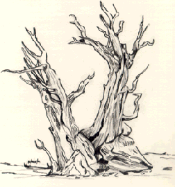

Student Project
Nicole

The question seems to be how do I feel when I'm all alone in the trees. Actually when I'm alone in trees I feel many different ways. Sometimes it's peaceful and it gives me a chance to really think about life. It gives me the opportunity to realize the things I love and that means alot to me. I see life and nature are beautiful. Everything is calm and peaceful. The tree itself has a beauty all its own.
-Nicole
c. Nicole
ALbert Lowry High School
Winnemucca, Nevada USA
Pencil on Paper 9 "X12"
Bristlecone Pine
Latin Name: Pinus Aristata
Age: 4,600 years
Circumference: TBA
Location: Great Basin National Park
Ely, Nevada
 Return to Main Page
Return to Main Page
June Julian jj68@nyu.edu